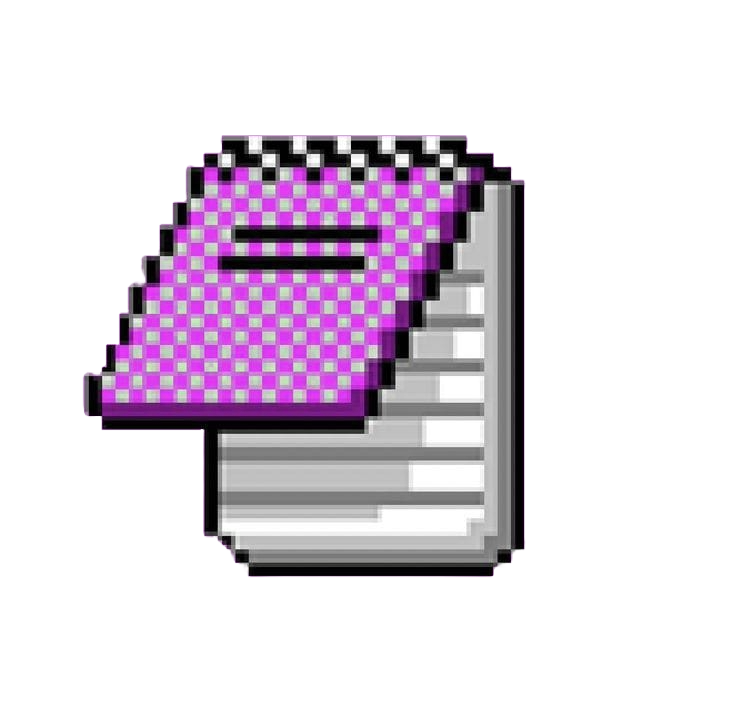

Na minha jornada na programação, descobri que tenho afinidades e desafios distintos em diferentes áreas. Enquanto me aventuro pelo vasto mundo do desenvolvimento de software, é claro que para mim que tenho um pouco de conforto quando se trata de HTML e CSS.
